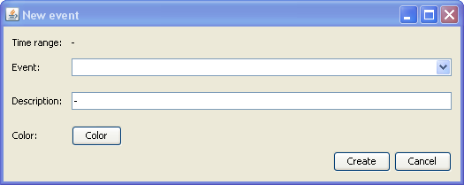

Polecenie dostępne z "Zdarzenia" -> "Nowe" wyświetla okno dialogowe pozwalające na utworzenie nowego zdarzenia.
Okno nie pojawi się, jeżeli wcześniej (przed wybraniem z menu, bądź z paska narzędziowego) na wykresie nie wybrano przedziału czasowego. Przedział czasowy jaki ma zostać objęty zdarzeniem, może być wyznaczony dowolnym narzędziem wybierającym - wybór o określonej liczbie sekund, wybór z klawiatury, albo wolny wybór myszką.
Okno zawiera informacje o przedziale czasowym w jakim zdarzenie wystąpiło, ustalonym w oparciu o selekcję zakresu czasowego na wykresie.
Okno dialogowe pozwala na wybór jednego z wcześniej zdefiniowanych typów zdarzeń, albo też utworzenie nowego typu. Aby wybrać typ zdarzenia, należy rozwinąć listę rozwijalną. Po wybraniu typu, opis typu zdarzenia oraz kolor pojawią się automatycznie. Jeżeli w liście rozwijalnej brak jest potrzebnego typu zdarzenia, można po prostu w okno listy wpisać nową nazwę typu, oraz wypełnić pole tekstowe z opisem i kolorem nowego typu zdarzenia.
Zaniechanie wprowadzenia nowego zdarzenia do projektu przez naciśnięcie przycisku "Cancel"
Akceptacja i wprowadzenie nowego zdarzenia do projektu przez naciśnięcie przycisku "OK"